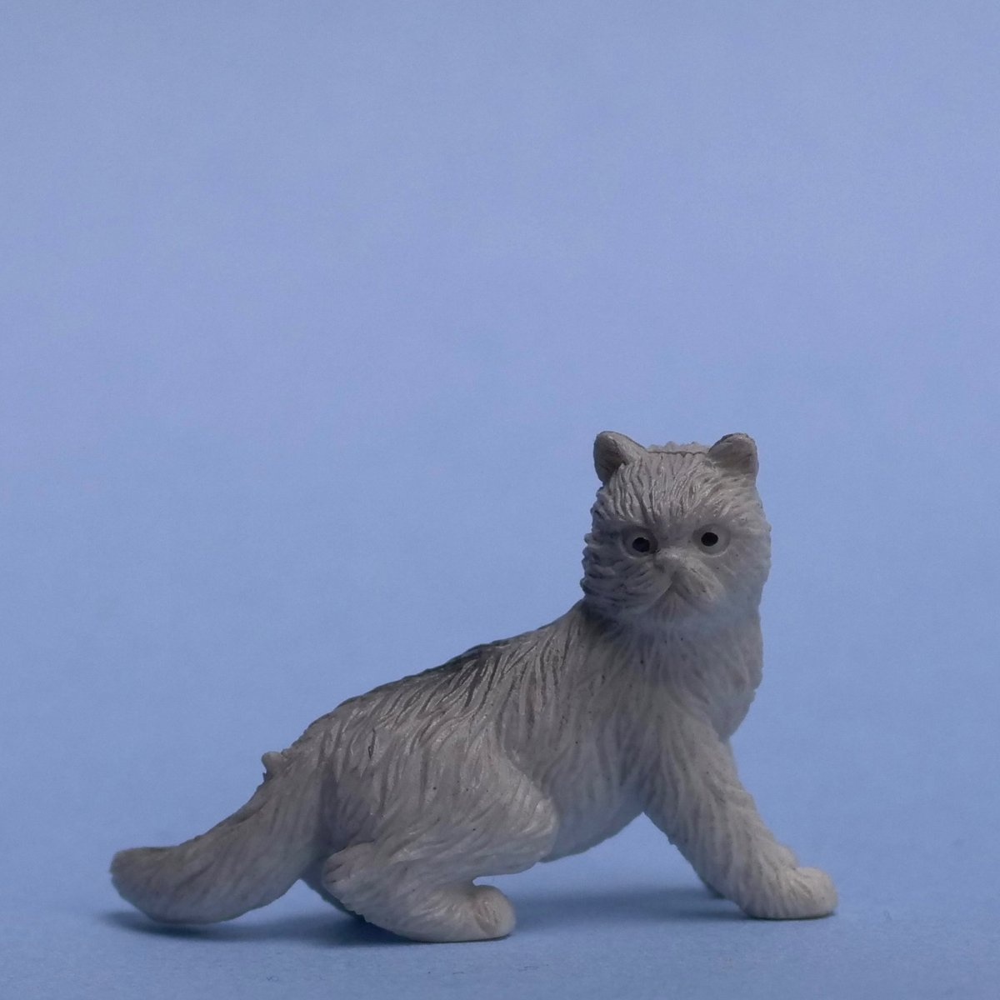

Videographer & Editor
PIP Global Safety
Video Editor / Videographer
01
Video and Audio Editor, Marketing and Social Media Manager.
I’m passionate about communicating ideas clearly through media of all types. Currently serving as in-house videographer & editor for PIP Global Safety, creating a variety of product videos and other assets. I also frequently collaborate with my friends at Bastl Instruments to help create videos and tutorials for their amazing synthesizers.

02
Current
PIP Global Safety
Bastl Instruments SRO
Past


03
For work, collaborations, questions, or anything whimsical and cool: